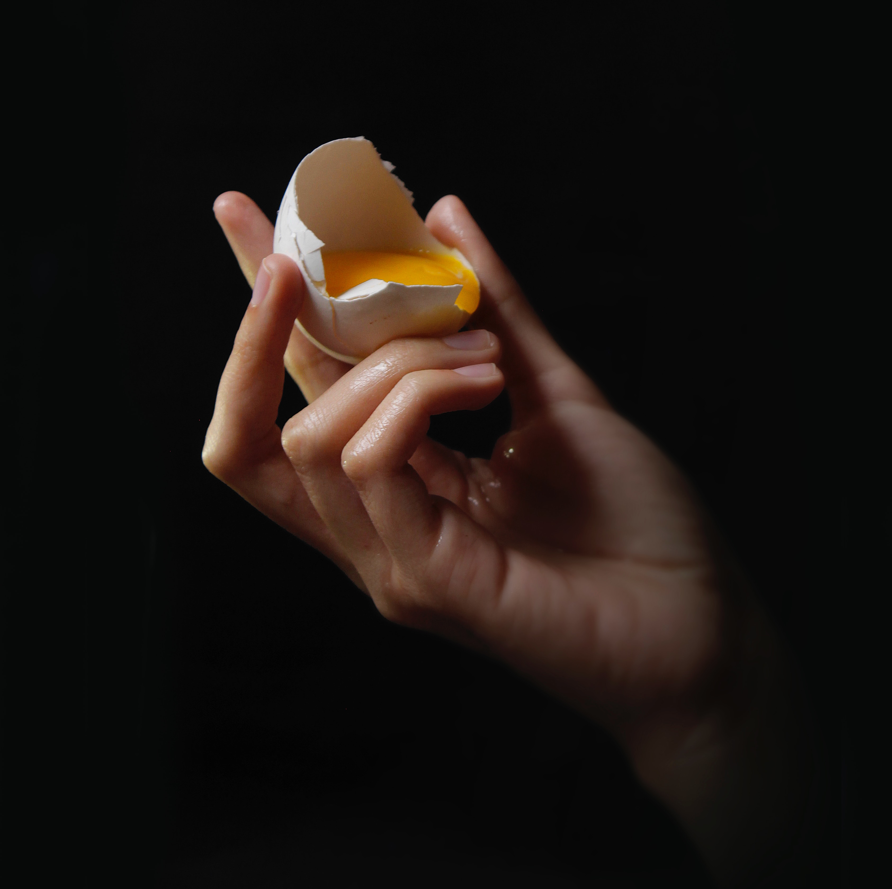
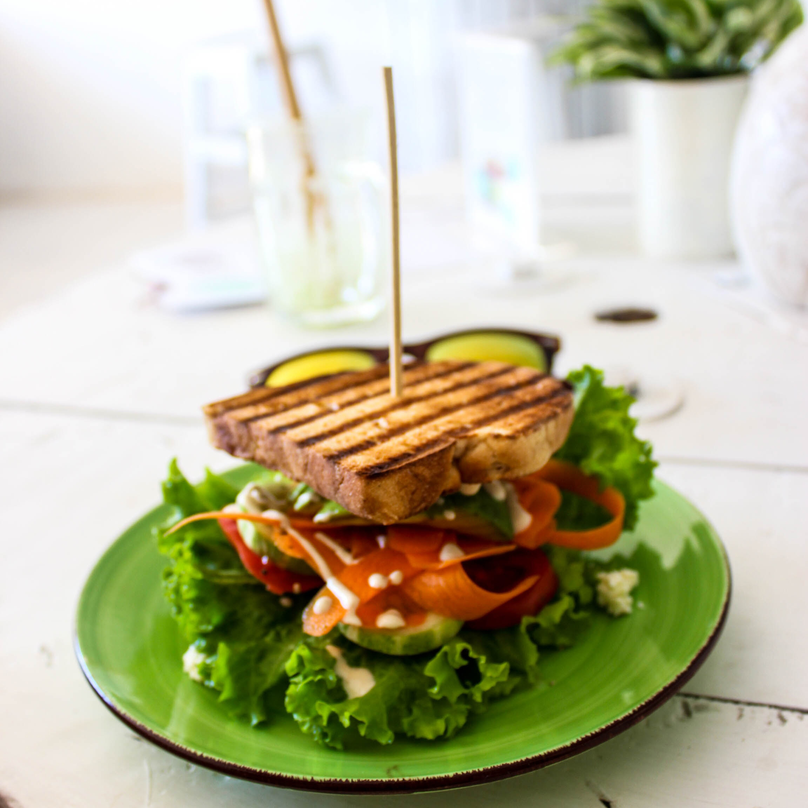
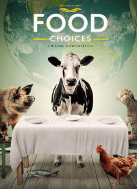
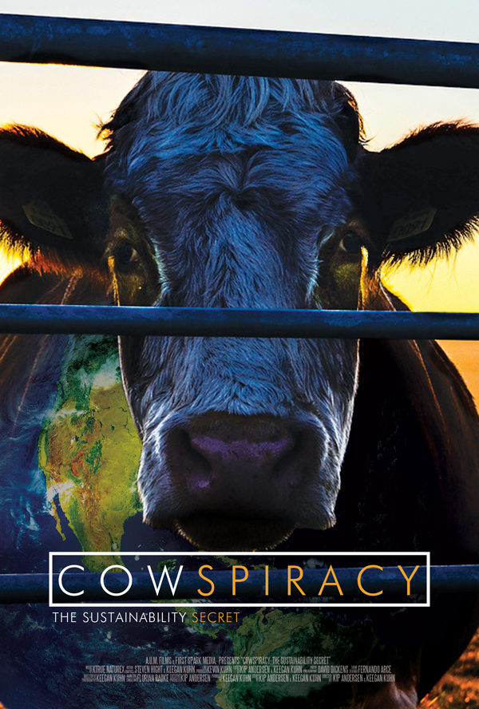
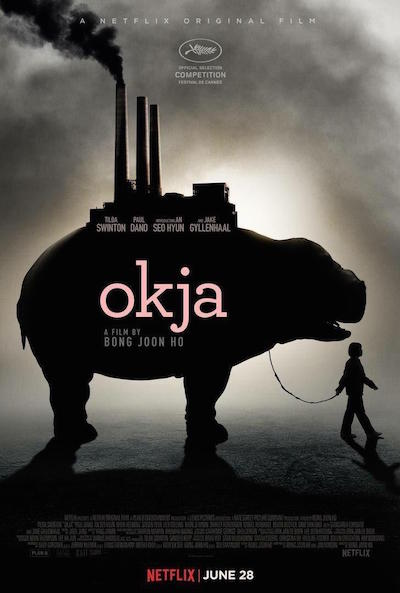

Receitas
Substituições

Receitas rápidas

Salgadas
Salgadas
- Receita 1
- Receita 2
- Receita 3
- Receita 4
- Receita 5
- Receita 6
- Receita 7
- Receita 8
- Receita 9
- Receita 10
Doces
- Receita 1
- Receita 2
- Receita 3
- Receita 4
- Receita 5
- Receita 6
- Receita 7
- Receita 8
- Receita 9
- Receita 10
Dicas
Documentarios sobre o tema


